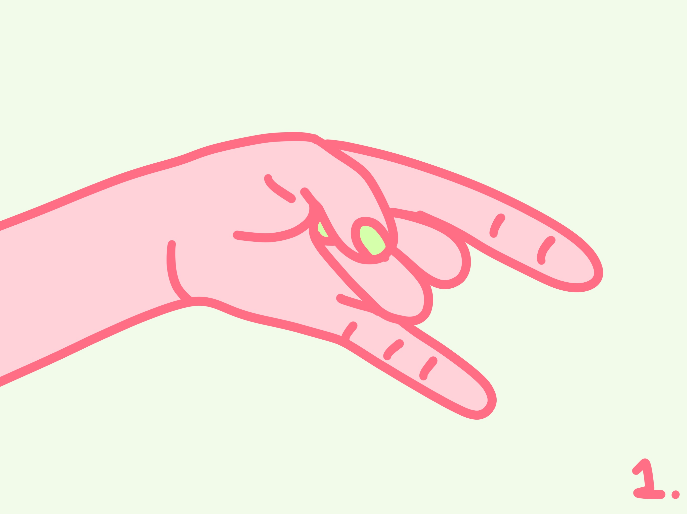
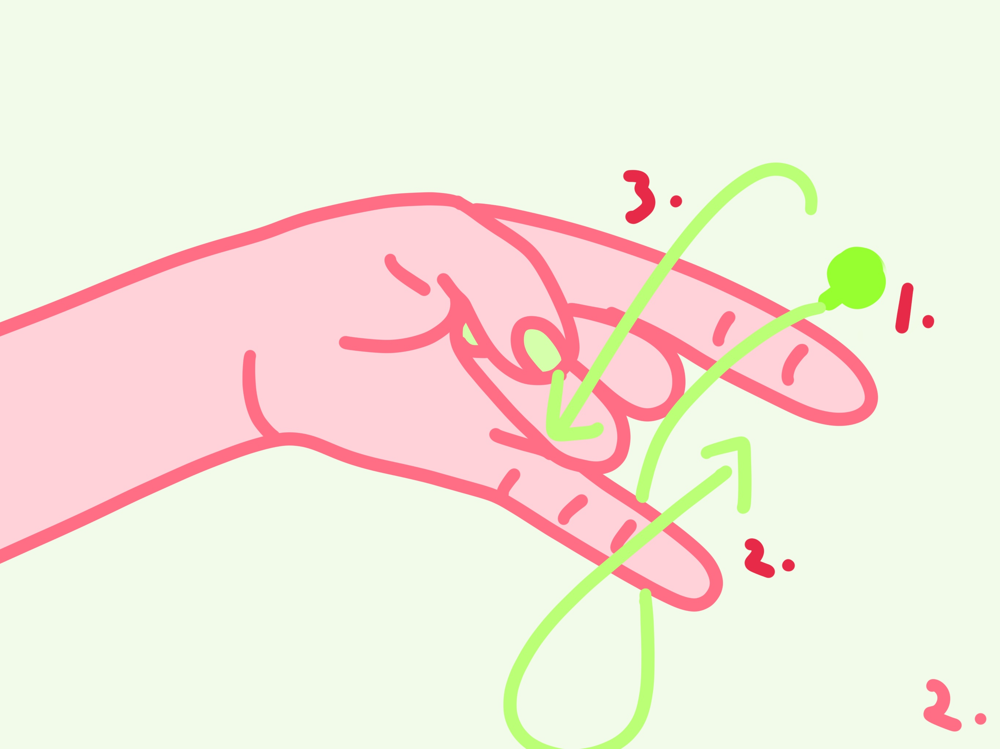
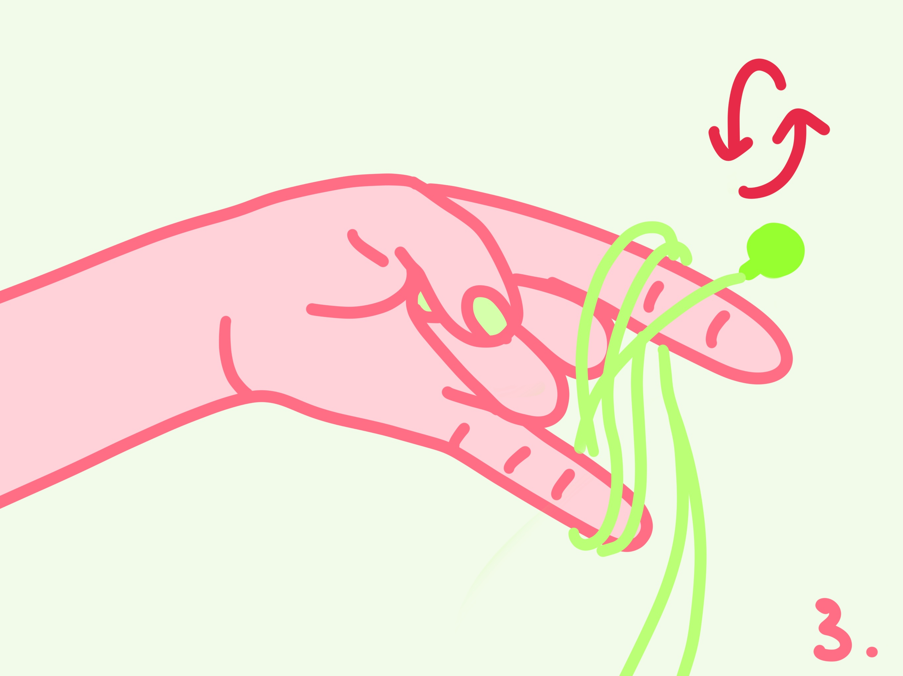
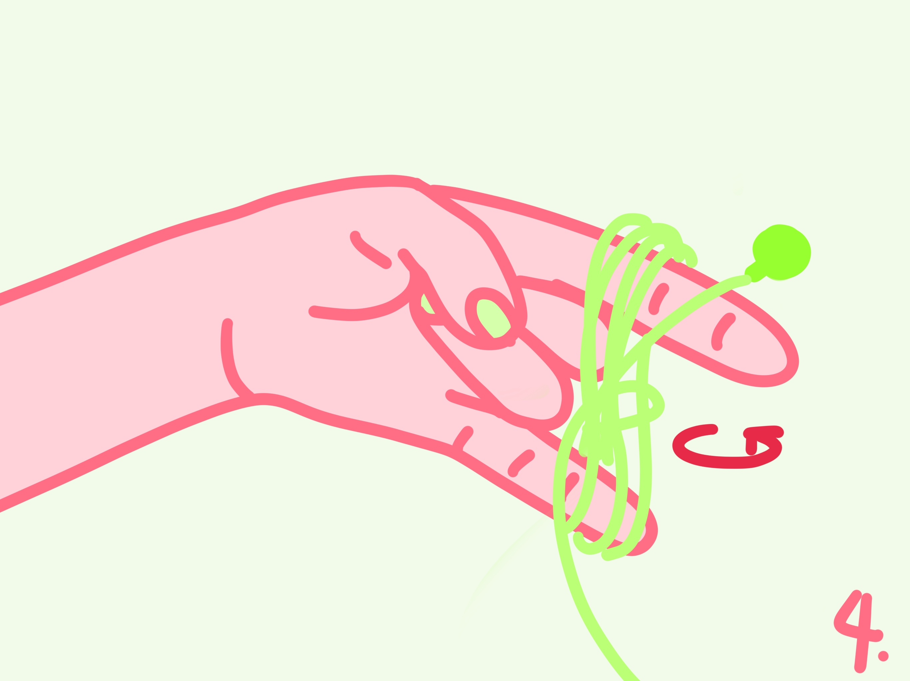
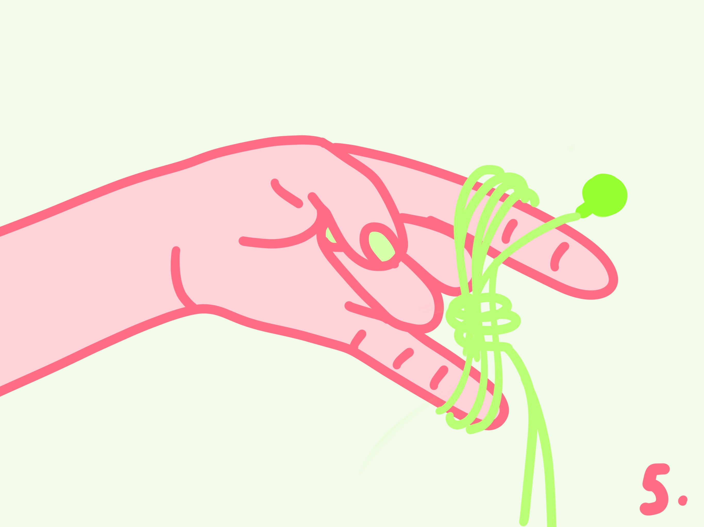
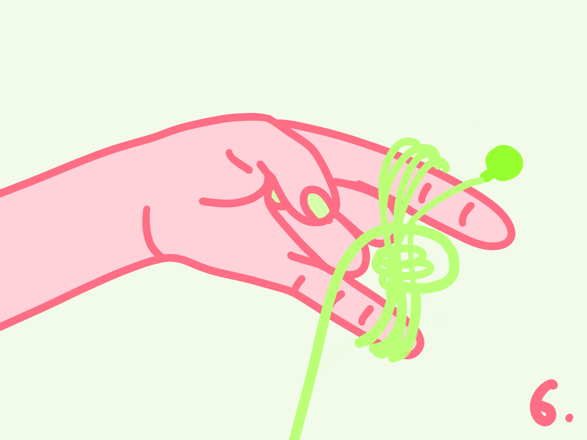
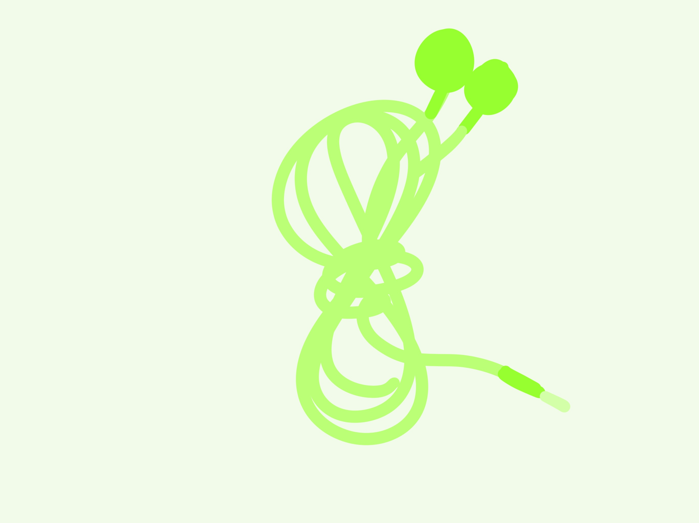

How To Fold Your Earphones
I am going to teach today how to fold and wrap your headphones, without making them messy ever again!
(Move cursor around the image to view magnified details!)

Step 1: Put your hand in a rock&roll gesture.

Put your headphone on your finger, then wrap it around as the image shows.

Continue wrapping the headphoone cord, like the number '8'.

After 3 or 4 rounds, wrap the '8' with the rest of the cord by circling the center.

Wrap it as tight as you want to, until you have only a bit of cord left.

Leave the cord to a side of the '8'.

Finish up with inserting the 'plug' of the headphone into a hole of the '8'.
Check for the video in case you don't get the steps correct!